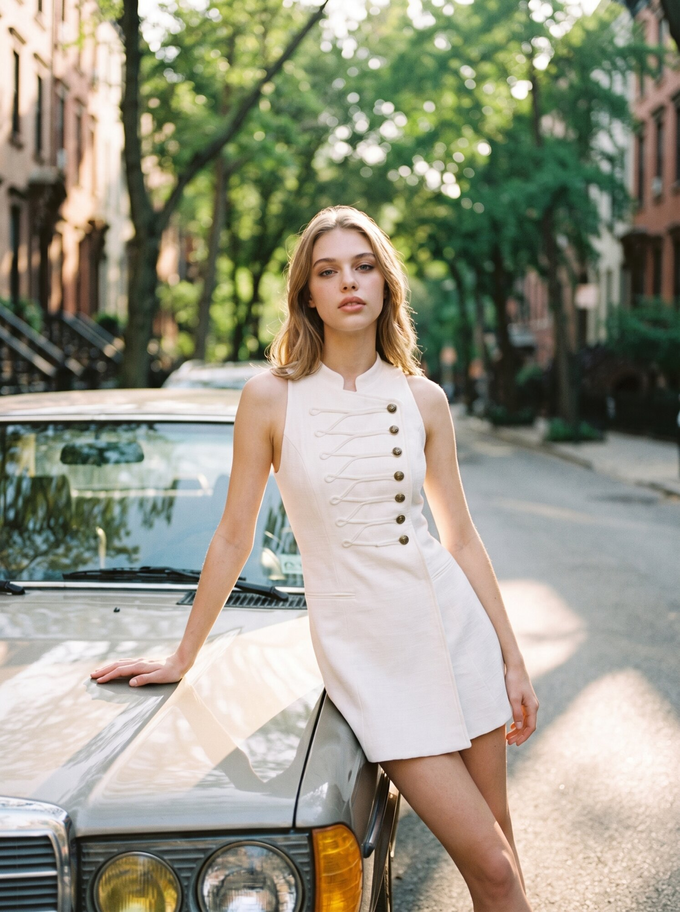

Nova Vision — студия генеративного визуала для брендов, которым нужна фотография и видео на уровне рекламной кампании, но без бюджета на кастинг, аренду студии и логистику выезда.
Я работаю на стыке инженерного подхода к промптингу и художественного вкуса fashion-фотографии: каждая серия строится как настоящая съёмка — с концепцией, светом, локацией и раскадровкой, только весь процесс происходит в нейросетях.
Сейчас в фокусе два направления: fashion-съёмка для брендов одежды и предметная съёмка для e-commerce и рекламы.
Генерация модели, локации и композиции кадра — от кастинга до финального света.
Работа с предметной генерацией, упаковкой и сложной композицией продуктовых сцен.
Оживление статичных кадров: движение модели, ветер, естественная динамика сцены.
Динамичные и рекламные видео-сцены — резкие движения, эффекты, продуктовая анимация.
Обсуждаем задачу, настроение, референсы бренда и итоговый формат — фото, видео или серия для соцсетей.
Собираю кадры по концепции, показываю варианты, отбираем лучшие ракурсы и композиции вместе.
Цветокоррекция, ретушь и, при необходимости, анимация — до состояния готового рекламного материала.